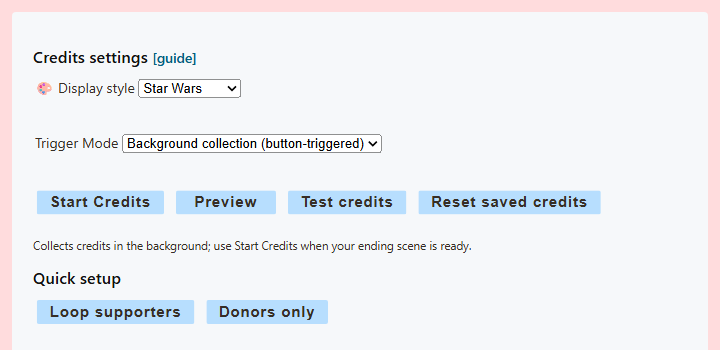

종료 장면 권장 설정
사용: 백그라운드 수집 는 크레딧 브라우저 소스가 종료 장면에만 있거나 숨겨질 때 로드 해제될 수 있는 경우에 사용하세요. 앱 또는 확장 프로그램이 방송 중 활동을 수집하므로 크레딧 페이지를 계속 열어 둘 필요가 없습니다.
- 방송 내내 Social Stream Ninja를 활성 상태로 유지하고 평소 채팅 소스가 계속 캡처하게 하세요.
- 열기 크레딧 롤 → 활성화 및 맞춤 설정.
- 표시 스타일을 선택하고 다음을 설정하세요: 트리거 모드 대상: 백그라운드 수집 를 방송 시작 전에 설정하세요.
- 업데이트된 크레딧 링크를 복사해 종료 장면의 OBS 브라우저 소스로 추가하세요.
- 사용: 크레딧 테스트 를 브라우저 소스가 로드된 상태에서 사용해 연결과 모양을 확인하세요.
- 방송이 끝나면 종료 장면으로 전환해 OBS가 크레딧 소스를 로드하거나 표시하게 하세요.
- 선택: 크레딧 시작, 또는 다음을 실행하세요:
creditsStart를 Stream Deck 또는 API에서 실행하세요.

올바른 트리거 모드 선택
| 모드 | 활동 수집 위치 | 롤 시작 방식 | 적합한 용도 |
|---|---|---|---|
| 자동 | 로드된 크레딧 페이지 내부 | OBS나 브라우저가 페이지를 표시할 때 자동으로 | 방송 내내 소스가 로드되어 있을 때 |
| 수동 | 로드된 크레딧 페이지 내부 | 시작 버튼, Stream Deck 또는 API | 페이지는 계속 로드되지만 시작 시간을 정확히 정하고 싶을 때 |
| 백그라운드 수집 | Social Stream 앱 또는 확장 프로그램 내부 | 시작 버튼, Stream Deck 또는 API | 별도의 종료 장면 또는 방송 중 닫히거나 로드 해제되는 소스 |
네 가지 제어의 동작
| 제어 | 결과 |
|---|---|
| 크레딧 시작 | 실제로 수집한 목록을 실행합니다. 자동/수동 모드에서는 저장이나 반복을 활성화하지 않으면 롤이 끝날 때 표시된 항목이 제거됩니다. 롤 도중 수신한 새 활동은 다음 실행을 위해 남습니다. 백그라운드 데이터는 초기화할 때까지 저장됩니다. |
| 미리보기 | 현재 실제 목록을 소비하지 않고 실행합니다. 생방송 전에 레이아웃을 확인할 때 사용하세요. |
| 크레딧 테스트 | 내장 참여자, 회원, 후원자 예시를 보냅니다. 실제 저장된 목록에 추가하거나 이를 바꾸거나 지우지 않습니다. |
| 저장된 크레딧 초기화 | 저장된 백그라운드 목록을 지우고 연결된 크레딧 페이지에도 로컬 목록을 지우도록 알립니다. |
다음 경우: 크레딧 테스트 에서 연결된 크레딧 소스가 없다고 보고하면 OBS 브라우저 소스를 로드하거나 표시하고 다시 시도하세요.
롤에 표시되는 사람
크레딧은 캡처된 채팅 참여자, 멤버십/구독, 후원형 활동을 인식할 수 있습니다. 이름과 플랫폼 유형이 있는 이벤트가 캡처되어야 합니다. 플랫폼이 보고하지 않는 조용한 시청자는 Social Stream이 목록에 넣을 수 없습니다.
- 참여자: 캡처된 메시지 또는 이름이 있는 활동 이벤트입니다.
- 회원/구독자: 캡처된 membership 필드 또는 지원되는 구독/멤버십 이벤트입니다.
- 후원자: 후원 값이 있는 캡처 항목입니다. 지원 통화 값은 정렬과 선택적 금액 표시를 위해 정규화됩니다. TikTok 연속 선물 업데이트는 같은 연속 선물 안에서 증가한 부분만 계산합니다. 가격을 알 수 없는 선물도 추정 달러 금액을 더하지 않으면서 후원자 자격을 부여합니다. TikTok 코인/다이아몬드 환산은 추정값이며 실제 지급액을 보장하지 않습니다.
- 사용자 구분: 다른 두 플랫폼에서 표시 이름이 같아도 서로 다른 소스 사용자로 취급됩니다.
기본 순위에서는 캡처된 활동마다 1점, 멤버십마다 50점, 정규화된 후원 1달러마다 100점을 더합니다. 목록은 VIP 후원 참여자, 일반 후원 참여자, 방송 참여자로 나뉩니다. 활성화: 후원 우선 표시 를 활성화하면 더 명확한 방송 후원자, 채널 회원, 방송 참여자 그룹을 대신 사용합니다.

빠른 설정, 필터, 저장된 데이터
- 후원 참여자 반복: 는 반복, 오버레이 데이터 저장, 후원 참여자 전용 필터, 후원 우선순위, 후원 금액을 활성화합니다.
- 후원자만: 는 반복, 오버레이 데이터 저장, 후원자 전용 필터, 후원 금액을 활성화합니다.
- 후원 참여자만 포함: 는 후원자와 인식된 회원/구독자를 포함하지만 채팅만 한 참여자는 제외합니다.
- 후원자만 포함: 는 캡처된 후원 신호가 필요합니다.
- 이 오버레이에 크레딧 목록 저장: 는 새로고침이나 소스 전환 후에도 자동/수동 페이지 수집을 보존하고 시작 실행이 완료되어도 목록이 소비되지 않게 합니다.
- 크레딧 계속 반복: 는 애니메이션을 다시 시작하며 새로 수집한 활동을 다음 반복에 포함합니다.
OBS 설정 세부 사항
- 크레딧 옵션을 먼저 마친 뒤 URL을 복사해야 선택한 URL 매개변수가 포함됩니다.
- 해당 URL을 OBS 브라우저 소스로 추가하세요. 전체 화면 스타일에는 일반적인 1920 × 1080 소스가 적합합니다.
- 자동 또는 수동 모드에서는 방송 내내 소스를 로드한 상태로 유지하세요. 서로 다른 사본을 만드는 것보다 각 장면에서 같은 OBS 소스를 재사용하는 것이 더 안전합니다.
- 백그라운드 수집에서는 방송 중 소스가 없거나 로드 해제되어 있어도 됩니다. 시작, 미리보기 또는 테스트를 보내기 전에만 연결되어 있으면 됩니다.
- 생방송 전에 미리보기나 테스트로 글꼴 크기, 속도, 카테고리, 투명도, 종료 메시지를 확인하세요.
Stream Deck 및 API 제어
공식 Stream Deck 플러그인은 크레딧 시작, 미리보기, 테스트, 초기화 동작을 제공합니다. Social Stream 원격 제어 API에서도 같은 명령을 사용할 수 있습니다:
| 동작 | HTTP 예시 |
|---|---|
creditsStart | https://io.socialstream.ninja/SESSION_ID/creditsStart |
creditsPreview | https://io.socialstream.ninja/SESSION_ID/creditsPreview |
creditsTest | https://io.socialstream.ninja/SESSION_ID/creditsTest |
creditsReset | https://io.socialstream.ninja/SESSION_ID/creditsReset |
바꿀 값: SESSION_ID 를 활성 Social Stream 세션으로 바꾸세요. 활성화: 확장 프로그램 원격 API 제어 (Global settings → Mechanics). 시작, 미리보기 또는 테스트가 화면에 표시되려면 크레딧 브라우저 소스가 연결되어 있어야 합니다.
일반적인 문제
- 테스트는 작동하지만 실제 목록이 비어 있음: 테스트 항목은 내장되어 있으며 활동이 수집되었다는 증거가 아닙니다. 방송 전에 의도한 트리거 모드를 선택했는지, 채팅 소스가 캡처 중이었는지 확인하세요.
- 설정을 다시 열었지만 제어가 표시되지 않음: 시작과 미리보기는 수동 및 백그라운드 모드에서 표시됩니다. 자동 모드는 표시 상태에 따라 시작됩니다.
- 연결된 크레딧 소스 없음: OBS 소스를 로드/표시하고 현재 복사한 URL과 세션이 맞는지 확인한 뒤 다시 시도하세요.
- 채팅 참여자가 빠짐: 자동/수동 모드는 크레딧 페이지가 계속 로드되어 있어야 합니다. 별도 종료 장면에는 백그라운드 수집을 사용하세요.
- 회원이나 후원자가 빠짐: 플랫폼 소스가 이름이 있는 멤버십 또는 후원 이벤트를 보냈는지, 후원자만/후원 참여자만 필터가 해당 이벤트를 제외하지 않는지 확인하세요.
- 롤이 끝난 뒤 이름이 사라짐: 활성화: 이 오버레이에 크레딧 목록 저장, 미리보기를 사용하거나 백그라운드 모드를 사용하세요. 저장과 반복이 꺼져 있으면 페이지에서 수집한 일반 시작 실행은 표시된 항목을 소비합니다.
- 이전 이름이 남아 있음: 선택: 저장된 크레딧 초기화 를 다음 방송 전에 선택하세요. 백그라운드 데이터는 초기화할 때까지 Social Stream 세션별로 저장됩니다.